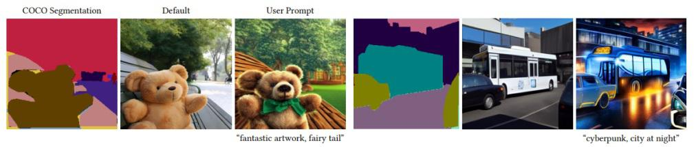

从零开始入门AI绘画神器Stable Diffusion¶
一、本地部署 Stable Diffusion¶
1. 前言
目前市面上比较权威，并能用于工作中的 AI 绘画软件其实就两款。一个叫 Midjourney（简称 MJ），另一个叫 Stable-Diffusion（简称 SD）。MJ 需要付费使用，而 SD 开源免费，但是上手难度和学习成本略大，并且非常吃电脑配置（显卡、内存）。
E 和 Midjourney 相比，Stable Diffusion 最大的优势是开源，这意味着 Stable Diffusion 的潜力巨大、发展飞快。由于开源免费属性，SD 已经收获了大量活跃用户，开发者社群已经为此提供了大量免费高质量的外接预训练模型（fine-tune）和插件，并且在持续维护更新。在第三方插件和模型的加持下，SD 拥有比 Midjourney 更加丰富的个性化功能，在经过使用者调教后可以生成更贴近需求的图片，甚至在 AI 视频特效、AI 音乐生成等领域，Stable Diffusion 也占据了一席之地。
Stable Diffusion 是一种潜在扩散模型（Latent Diffusion Model），能够从文本描述中生成详细的图像。它还可以用于图像修复、图像绘制、文本到图像和图像到图像等任务。简单地说，我们只要给出想要的图片的文字描述在提 Stable Diffusion 就能生成符合你要求的逼真的图像！
2. 电脑配置
电脑配置最核心的关键点：看显卡、看内存、看硬盘、看 CPU。其中最重要的是看显卡。N 卡（英伟达 Nvida 独立显卡）首选，效率远超集显/AMD/Intel 显卡和 CPU 渲染，最低 10 系起步，体验感佳用 40 系，显存最低 4G，6G 及格，上不封顶；内存最低 8G，16G 及格，上不封顶；硬盘可用空间最好有个 500G 朝上，固态最佳。
系统要求：支持 Win10/Win11/macOS（仅限 Apple Silicon，Intel 版本的 Mac 无法调用 Radeon 显卡）和 Linux 系统，苹果版 SD 兼容的插件数量较少，功能性不及 Windows 与 Linux 电脑。
如果身边没有合适的电脑可以考虑购买云主机，比如腾讯 GPU 云服务器。若无法使用独立显卡和云服务，亦可修改启动配置，使用 CPU 渲染（兼容性强，出图速度慢，需要 16G 以上内存）。
从图中可看出，与 AMD 或英特尔的任何产品相比，Nvidia 的 GPU 提供了卓越的性能--有时是以巨大的优势。随着 Torch 的 DLL 修复到位，RTX 4090 的性能比带有 xformers 的 RTX 3090 Ti 高出 50%，而没有 xformers 的性能则高出 43%。生成每张图片只需要三秒多。
3. 安装方法
目前大家普遍采用的 Stable Diffusion Web UI 是发布于开源程序分享网站 Github 的 Python 项目，和平常软件安装方法有所不同，不是下载安装即可用的软件，需要准备执行环境、编译源码，针对不同操作系统（操作系统依赖）、不同电脑（硬件依赖）还有做些手工调整，这需要使用者拥有一定的程序开发经验（可以现学），已经有很多大佬们写了详细的安装教程。（如 安装Stable-Diffusion-WebUI全过程 @托尼不是塔克）
如果像我一样是小白不会装，现在可以直接使用大佬们做的一键启动程序包，比如国内@秋葉 aaaki 大大开发的整合包，极大的降低了安装门槛（强烈推荐！）

（详见 https://www.bilibili.com/video/BV1ne4y1V7QU一键启动包只是封装了可视化的一键界面，不影响出图效果，只是降低了本地部署的门槛。
Nvidia 显卡用户须知：在使用 SD 前，请登录 Nvidia 官网 https://www.nvidia.cn/geforce/drivers/ 下载安装对应显卡最新版驱动程序 ，与 https://blog.csdn.net/weixin_44177494/article/details/120444922 显卡支持的最新版 CUDA 驱动。
4. 启动 SD
进入 SD 安装文件夹，双击 webui-user.bat，待其加载完成方可使用浏览器（Chrome/Edge）登录默认的加载 IP：http://127.0.0.1:7860/
5. 界面汉化
如果需要中文语言包，可以下载如下中文语言包扩展，下载界面网址为： 中文语言包扩展
方法 1：通过 WebUI 拓展进行安装
- 打开 stable diffusion webui，进入"Extensions"选项卡
- 点击"Install from URL"，注意"URL for extension's git repository"下方的输入框
- 粘贴或输入本 Git 仓库地址 https://github.com/VinsonLaro/stable-diffusion-webui-chinese
- 点击下方的黄色按钮"Install"即可完成安装，然后重启 WebUI(点击"Install from URL"左方的"Installed"，然后点击黄色按钮"Apply and restart UI"网页下方的"Reload UI"完成重启)
- 点击"Settings"，左侧点击"User interface"界面，在界面里最下方的"Localization (requires restart)"，选择"Chinese-All"或者"Chinese-English"
- 点击界面最上方的黄色按钮"Apply settings"，再点击右侧的"Reload UI"即可完成汉化
二、界面基础¶
1. 了解界面
接下来是具体的使用方法简介。目前 SD 并不存在通行可靠的使用规范，每个人的电脑配置、需求都不尽相同，cpkd/Safetensors 大模型、VAE、embeding、lora 等 AI 模型、各类插件、提示词、输出参数的组合牵一发则动全身，需要大家有足够的耐心查阅插件开发者的说明文档和来自 https://civitai.com/ 等分享网站的使用心得 ，大家可以先到 civitai 上搜索中意的图例，复用原作者的出图提示词、参数和模型，再以此修改，这样学习的效果最为直观。
文生图：根据文本提示生成图像
图生图：根据提供的图像作为范本、结合文本提示生成图像
更多：优化（清晰、扩展）图像
图片信息：显示图像基本信息,包含提示词和模型信息（除非信息被隐藏）
模型合并：把已有的模型按不同比例进行合并生成新模型
训练：根据提供的图片训练具有某种图像风格的模型
描述语分为正向/负向描述，它们也叫 tag（标签）或 prompt（提示词）
正面提示词：相比 Midjourney 需要写得更精准和细致，描述少就给 AI 更多自由发挥空间。
负面提示词：不想让 SD 生成的内容。
正向：masterpiece, best quality, 更多画质词，画面描述
反向：nsfw, lowres, bad anatomy, bad hands, text, error, missing fingers,extra digit, fewer digits, cropped, worst quality, low quality, normal quality, jpeg artifacts, signature, watermark, username, blurry,根据画面产出加不想出现的画面。
生成按钮下面的 5 个小图标（从左到右依次分别是）
- 复原上次生成图片的提示词（自动记录）
- 清空当前所有提示词
- 打开模型选择界面
- 应用选择的风格模板到当前的提示词
- 存档当前的正反向提示词
2. 采样方法
- 建议根据自己使用的 checkpoint 使用脚本跑网格图（用自己关心的参数）然后选择自己想要的结果。
- 懒得对比：请使用 DPM++ 2M 或 DPM++ 2M Karras（二次元图）或 UniPC，想要点惊喜和变化，Euler a、DPM++ SDE、DPM++ SDE Karras（写实图）、DPM2 a Karras（注意调整对应 eta 值）
- eta 和 sigma 都是多样性相关的，但是它们的多样性来自步数的变化，追求更大多样性的话应该关注 seed 的变化，这两项参数应该是在图片框架被选定后，再在此基础上做微调时使用的参数。
3. 采样步数
此参数控制这些去噪步骤的数量。通常越高越好，但在一定程度上，我们使用的默认值是 25 个步骤。以下是不同情况下使用哪个步骤编号的指南：
- 如果您正在测试新的提示，并希望获得快速结果来调整您的输入，请使用 10-15 个步骤
- 当您找到您喜欢的提示时，请将步骤增加到 25
- 如果是有毛皮的动物或有纹理的主题，生成的图像缺少一些细节，尝试将其提高到 40
面部修复：修复人物的面部，但是非写实风格的人物开启面部修复可能导致面部崩坏。
平铺：生成一张可以平铺的图像
高分辨率重绘：使用两个步骤的过程进行生成，以较小的分辨率创建图像，然后在不改变构图的情况下改进其中的细节，选中该选项会有一系列新的参数，
其中重要的是：
放大算法：Latent 在许多情况下效果不错，但重绘幅度小于 0.5 后就不甚理想。ESRGAN_4x、SwinR 4x 对 0.5 以下的重绘幅度有较好支持。
放大倍数: 通常 2 倍即可
重绘幅度：决定算法对图像内容的保留程度。该值越高，放大后图像就比放大前图像差别越大。低 denoising 意味着修正原图，高 denoising 就和原图就没有大的相关性了。一般来讲阈值是 0.7 左右，超过 0.7 和原图基本上无关，0.3 以下就是稍微改一些，0 什么都不会改变，1 会得到一个完全不同的图像。具体的执行步骤为 重绘强度 * 重绘步数。
长宽尺寸（分辨率）
长宽尺寸并非数值越大越好，最佳的范围应在 512 至 768 像素之间，比如正方形图多是 512512 和 768768，人像肖像 512x768，风景画 768×512，可按比例加大或减小，这个值必须是 8 的倍数。如果不希望主题对象出现重复，应在此范围内选择适当的尺寸。如果需要更高分辨率的图片，建议先使用 SD 模型生成图片，然后再使用合适的模型进行 upscale。
生成批次：每次生成图像的组数。一次运行生成图像的数量为生成批次 * 每批数量。
每批数量：同时生成多少个图像。增加这个值可以提高性能，但你也需要更多的 VRAM。图像总数是这个值乘以批次数。除 4090 等高级显卡以外通常保持为 1。
提示词相关性 CFG：较高的数值将提高生成结果与提示的匹配度。
OpenArt 上使用的默认 CFG 是 7，这在创造力和生成你想要的东西之间提供了最佳平衡。通常不建议低于 5。
CFG 量表可以分为不同的范围，每个范围都适合不同的提示类型和目标
- CFG 2 – 6：有创意，但可能太扭曲，没有遵循提示。对于简短的提示来说，可以很有趣和有用
- CFG 710：推荐用于大多数提示。创造力和引导一代之间的良好平衡
- CFG 10-15：当您确定提示是详细且非常清晰的，您希望图像是什么样子时
- CFG 16-20：除非提示非常详细，否则通常不推荐。可能影响一致性和质量
- CFG >20：几乎无法使用
随机种子（Seed）:生成每张图片时的随机种子，这个种子是用来作为确定扩散初始状态的基础。不懂的话，用随机的即可。
3. 提示词生成
开始不知道怎么写提示词，可以先参考优秀的风格模板作为起手式，还可以借助描述语工具和网站，多出图多研究，掌握了出图规律，慢慢就可以自己写提示词啦，写提示词要尽可能写的详细。跑 AI 的过程就像抽卡，抽出一堆卡，选出你审美范畴里觉得好看的。
找 tag 关键词网站：
4. Prompt 格式优化
第一段：画质 tag，画风 tag
第二段：画面主体，主体强调，主体细节概括（主体可以是人、事、物、景）画面核心内容
第三段：画面场景细节，或人物细节，embedding tag。画面细节内容
第二段一般提供人数，人物主要特征，主要动作（一般置于人物之前），物体主要特征，主景或景色框架等
举个例子：(具体场景还是要灵活应用，多尝试，找到合适自己的节奏和风格）
第一段：masterpiece, best quality, 4k, ( Pixar - style :1.4)
第二段：1boy,(Cute,handsome,wearing outdoor sportswear :0.7), 3D,(Face close-up :1.2), (at night, surrounded by glowing plants, flowers, flying fireflies, bonfires), (Ultra detailed, aesthetic, beautiful composition, rich bright colors, volumetric soft light).
第三段：Inspired by Alice in Wonderland, magic, fairy tales. unreal Engine, octane render, cuteness render, awe inspiring, beautiful,
5. Prompt 规则细节
①越靠前的 Tag 权重越大。
②生成图片的大小会影响 Prompt 的效果，图片越大需要的 Prompt 越多，不然 Prompt 会相互污染。
③Stable-diffusion 中，可以使用括号人工修改提示词的权重，方法如下：
(word) - 将权重提高 1.1 倍
((word)) - 将权重提高 1.21 倍（= 1.1 * 1.1）
[word] - 将权重降低至原先的 90.91%
(word:1.5) - 将权重提高 1.5 倍
(word:0.25) - 将权重减少为原先的 25%
请注意，权重值最好不要超过 1.5
④Prompt 支持使用 emoji，可通过添加 emoji 达到表现效果。如😍形容表情，🖐可修手。
⑤“+” ， “ AND” ， “|” 用法：“+”和“ AND ”都是用于连接短 Tag，但 AND 两端要加空格。"+"约等于" and "；“|” 为循环绘制符号（融合符号）(Prompt A: w1)|(Prompt B: w2)
以上表达适用于 WebUI，w1、w2 为权重。AI 会对 A、B 两 Prompt 进行循环绘制。可往后无限加入 Prompt。
⑥tag 不一定是多么充满细节，只要模型稳定。小图+高分辨率重绘。800400 的图变成 1600800，初识小图减少崩坏概率。
⑦关键词最好具有特异性，譬如 Anime(动漫)一词就相对泛化，而 JoJo 一词就能清晰地指向 JoJo 动漫的画风。措辞越不抽象越好，尽可能避免留下解释空间的措辞。
三、了解模型¶
1. 下载模型
主流模型下载网站：
- Hugging face 是一个专注于构建、训练和部署先进开源机器学习模型的网站： https://huggingface.co/
- Civitai 是一个专为 Stable Diffusion AI 艺术模型设计的网站： https://civitai.com/

2. 模型选择
如何选择合适模型是最重要的。
从你想画的风格（写实、二次元、卡通盲盒等）来选择大模型，再搭配合适的 Lora。
①Checkpoint
体积较大，也被称为大模型，不同的大模型使用不同的图片训练而成，对应不同的风格，相当于最底层的引擎。有时候需要大模型+VAE+emb+Lora 联合搭配使用以达到需要的效果。
下载的大模型可放置于 SD 文件夹/models/Stable-diffusion 内。
②Lora
Lora 是特征模型，体积较小，是基于某个确定的角色、确定的风格或者固定的动作训练而成的模型，可使用权重控制，确定性要远强于 embedding。embedding 和 Lora 有功能交集的部分，也有互相不可取代的地方。
在 ckpt 大模型上附加使用，对人物、姿势、物体表现较好。在 webui 界面的 Additional Networks 下勾线 Enable 启用，然后在 Model 下选择模型，并可用 Weight 调整权重。权重越大，该 Lora 的影响也越大。不建议权重过大（超过 1.2），否则很容易出现扭曲的结果。
多个 Lora 模型混合使用可以起到叠加效果，譬如一个控制面部的 Lora 配合一个控制画风的 Lora 就可以生成具有特定画风的特定人物。因此可以使用多个专注于不同方面优化的 Lora，分别调整权重，结合出自己想要实现的效果。
LoHA 模型是一种 LORA 模型的改进。
下载的 Lora 可放置于 SD 文件夹/models/Lora 内。

③VAE
VAE 模型类似滤镜，对画面进行调色与微调，一般需要搭配相应的模型一起使用。（如果图片比较灰，颜色不太靓丽，就可能是没加载 vae)
下载的 VAE 可放置于 SD 文件夹/models/VAE 内。
④Textual inversion（embedding）
关键词预设模型，即关键词打包，即等于预设好一篮子关键词 a,b,c 打包，进而来指代特定的对象/风格。也可以通过下载 Textual inversion 进行使用。
下载的 embedding 可放置于 SD 文件夹/embeddings 内。
四、ControlNet¶
ControlNet 使得 SD 从玩具变成做商业项目的神器，接下来会重中之重来详细讲解一下。
ControlNet 是斯坦福大学研究人员开发的 Stable Diffusion 的扩展，使创作者能够轻松地控制 AI 图像和视频中的对象。它将根据边缘检测、草图处理或人体姿势等各种条件来控制图像生成。ControlNet 可以概括为一种简单的稳定扩散微调方法。ControlNet 的工作原理是将可训练的网络模块附加到稳定扩散模型的 U-Net （噪声预测器）的各个部分。Stable Diffusion 模型的权重是锁定的，在训练过程中它们是不变的。在训练期间仅修改附加模块。
1. 安装
从 github 上找到并把网址填到扩展里安装，安装完后记得点击 Apply and restart UI（ https://github.com/Mikubill/sd-webui-controlnet ）
- 将 ControlNet 模型（.pt、.pth、.ckpt 或.safetensors）放入 models/ControlNet 文件夹。
- 打开“txt2img”或“img2img”选项卡，写下您的提示。
- 按“刷新模型”，选择要使用的模型。（若没有出现，请尝试重新加载/重新启动 webui）
- 上传您的图像并选择预处理器，完成。
目前，它支持完整型号和修剪型号。使用 extract_controlnet.py 从原始.pth 文件中提取 controlnet。
预训练模型： https://huggingface.co/lllyasviel/ControlNet/tree/main/models
2. 界面介绍
开启：选中此框以启用 ControlNet。
颜色反转：交换黑色和白色。例如，它可以在您上传涂鸦时使用。ControlNet 需要黑色背景和白色涂鸦。如果您使用白色背景的外部软件创建涂鸦，则必须使用此选项。如果您使用 ControlNet 的界面创建涂鸦，则不需要使用此选项。
RGB 转为 BGR：用于检测用户导入图像中的颜色信息。有时图像中的颜色信息可能与扩展所期望的不同。如果您上传图像并使用预处理，则无需选中此框。
低显存：这将减缓 ETA 进程，但有助于使用更少的计算空间(显存小于 8 GB VRAM 建议使用)，检查您是否用完了 GPU 内存，或者想要增加处理的图像数量。
推测模式：ControlNet 自动识别图像(不需要提示和负面提示)与选定的预处理器。它强制 ControlNet 编码器遵循输入控制图（如深度、边缘等），即使没有提示也是如此。使用此模式时使用更高的步进，例如 50，但是这个效果不一定好。
权重(Weight)：代表使用 ControlNet 生成图片时被应用的权重占比。
引导介入时机(Guidance Start)：在理解此功能之前，我们应该先知道生成图片的 Sampling steps 采样步数功能，步数代表生成一张图片要刷新计算多少次，Guidance Start(T) 设置为 0 即代表开始时就介入，默认为 0，设置为 0.5 时即代表 ControlNet 从 50% 步数时开始介入计算。
引导退出时机(Guidance End)：和引导介入时机相对应，如设置为 1，则表示在 100%计算完时才会退出介入也就是不退出，默认为 1，可调节范围 0-1，如设置为 0.8 时即代表从 80% 步数时退出介入。
调整大小模式提供了调整 ControlNet 大小和上传图像的纵横比。
Just Resize：不保留纵横比的情况下，改变 ControlNet 图像的大小以匹配 Txt2Img 设置的宽度和高度。这包括拉伸或压缩图像以适应指定的尺寸。
Scale to Fit (Inner Fit)：调整 ControlNet 图像的大小以适应 Txt2Image 的尺寸。
Envelope (Outer Fit)：调整 Txt2Image 的大小以适应 ControlNet 图像的尺寸。
画布宽度 和 画布高度：它会调整空白画布的大小来进行绘制，不会影响上传的原始图像。
预览图片处理结果：能够快速查看选择的预处理器是如何将上传的图像或绘图转换为 ControlNet 的检测图。对在渲染输出图像之前尝试各种预处理器有用，可节省我们的时间。
隐藏处理结果：删除预览图像。
预处理器和模型是 ControlNet 的主要选项。
预处理器：用于对输入图像进行预处理，例如检测边缘、深度和法线贴图。None 使用输入图像作为控制图。 根据所需的输出，用户可以选择相应的控制方法。
模型：如果您选择了预处理器，您通常会选择相应的模型。但是它并不限制你混合和匹配所有的预处理器和模型，但是混合多了就会产生负面效果，所以最好使用更加匹配的模型并且越少越好。ControlNet 模型与在 AUTOMATIC1111 GUI 顶部选择的稳定扩散模型一起使用。
五、预处理器¶
下面我们介绍几个常用的 ControlNet，并在下面举例说明如何使用它。
1. Canny 边缘检测
Canny 通过使用边缘检测器创建高对比度区域的轮廓来检测输入图像。线条可以捕捉到非常详细的信息，但如果你的图像背景中有一些物体，它很可能会检测到不需要的物体。所以背景中物体越少效果越好。用于此预处理器的最佳模型是 control_sd15_canny。

2. Depth & Depth Leres
这个预处理器有助于生成输入图像的深度估计。深度通常用于控制图像内物体的空间定位。浅色区域意味着它离用户更近，而深色区域则离用户更远。
在大图像时它可能会丢失图像内部的细节（面部表情等）。一般会与 control_sd15_depth 模型组合使用。Midas Resolution 函数用于增加或减少 detectmap 中的大小和细节级别。它的级别越高，将使用更多的 VRAM，但可以生成更高质量的图像，反之亦然。
Depth Leres 有与 Depth 相同的基本概念，但在地图中包含更广泛的范围。但有时它会从图片中捕获了太多信息，可能会生成与原始图像略有不同的图像。所以最好先试用两种预处理器，然后决定哪一种。
3. HED (Holistically-Nested Edge Detection)
Hed 可以在物体周围创建清晰和精细的边界，输出类似于 Canny，它的有效性在于能够捕捉复杂的细节和轮廓，同时保留细节特征(面部表情、头发、手指等)。Hed 预处理器可用于修改图像的风格和颜色。用于此预处理器的最佳模型是 control_sd15_hed。
4. MLSD ( Mobile Line Segment Detection)
MLSD Preprocessor 最适合生成强有力的线条，这些线条能够检测出需要独特和刚性轮廓的建筑和其他人造作品。但是它不适用于处理非刚性或弯曲的物体。MLSD 适用于生成室内布局或建筑结构，因为它可以突出直线和边缘。用于此预处理器的最佳模型是 control_sd15_mlsd。
5. Normal map
法线图使用了三种主要颜色(红、绿、蓝)，通过不同的角度来精确定位物体的粗糙度和光滑程度。它生成法线图可以保留相当多的细节，但可能会产生意想不到的结果，因为法线图完全来自图像，而不是在 3D 建模软件中构建的。
法线图有利于突出复杂的细节和轮廓，并且在定位对象方面也很有效，特别是在接近度和距离方面，设置一个更高的阈值可以移除背景的远处部分，降低阈值将命令 AI 保留甚至显示额外的背景元素。用于此预处理器的最佳模型是 control_sd15_normal。
6. OpenPose
这个预处理器生成了一个基本的骨骼火柴人形象。这种技术被广泛采用，因为多个 OpenPose 骨架可以组合成一个图像，骨架图有很多关节点，每个点代表如下图所示。
7. Scribble
涂鸦的目的是从简单的黑白线条画和草图生成图像。用户也可以使用“Canvas”选项创建特定大小的空白画布，用于手动素描（也可以直接上传图像）。如果草图和绘图由白色背景上的黑线组成，则需要选中“Invert Input Color”复选框。用于这个预处理器的最佳模型是 control_sd15_openpose。
8. Segmentation
分割预处理器检测并将上传的图像分割为同一图像内的段或区域。该模型在生成一组新的图像时，将 detectmap 图像应用于文本提示。用于此预处理器的最佳模型是 control_sd15_seg。

附录：预处理器与对应模型清单
总结¶
使用 AI 绘图工具 Stable Diffusion 确实能提高美术工作者的生产效率，但是请记住：人工智能，没有人工就没有智能。Stable Diffusion 并不是简单易上手的 APP，我们需要花费一定的时间和精力去学习和不断调试，才能使其真正为我们所用，高效产出效果符合需求的图片。
最后，我为大家简单罗列一下使用 SD 的几项核心能力：
- Github 使用能力，使用者在熟练掌握 Github 开源项目的安装、调参、排错、编程环境设置等技能后，就不会在 SD 报错时六神无主了。
- 基础出图调试能力，这项能力能够让使用者无需协助就能自行摸索稳定输出可用的图片。
- Controlnet 构图能力，基于 Controlnet 的构图控制是美术从业者驾驭 SD 的缰绳，不会用 Controlnet，你只会被随机噪声牵着走。
- 学习插件并组合使用的能力。
- Lora 等小模型的训练能力（进阶）。
站在巨人的肩膀上
- https://avoid.overfit.cn/post/acbb609d015a40fc8d0cd26f8e215dd9
- https://github.com/AUTOMATIC1111/stable-diffusion-webui/wiki/Features#attentionemphasis
- https://muhou.net/document/236688.html
- https://guide.novelai.dev/guide/prompt-engineering/practice
- https://zhuanlan.zhihu.com/p/619721909
- https://zhuanlan.zhihu.com/p/612572004
- https://www.163.com/dy/article/I22IV66G0518R7MO.html
- https://stable-diffusion-art.com/controlnet/
凡本网注明"来源：XXX "的文/图/视频等稿件，本网转载出于传递更多信息之目的，并不意味着赞同其观点或证实其内容的真实性。如涉及作品内容、版权和其它问题，请与本网联系，我们将在第一时间删除内容！
作者: 生誮果Design
来源： https://www.uisdc.com/stable-diffusion-4